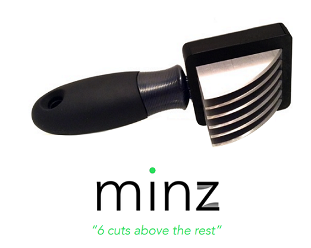
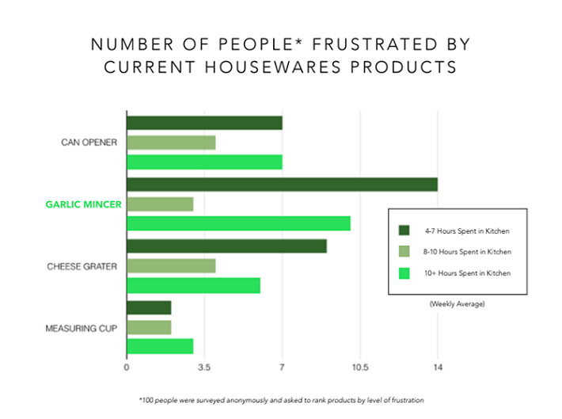
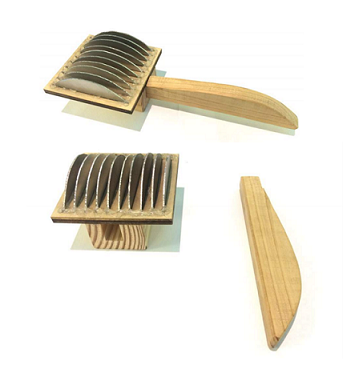
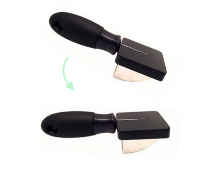

MINZ
OVERVIEW

Our team was tasked by Keith Jaffee and Walter Herbst of Design Lab Home to create a product to fill potential
“white space” in the housewares industry. At this time, there is no professional cooking product that easily
minces garlic without crushing the garlic and releasing the vital juices. Our custom blades, combined with an
ergonomic grip, flat head, and natural cutting motion provide a familiar and quick experience cutting garlic.
User centered design, and group organization were key to the success of our project.
- Redesigned a common kitchen utensil from conception to prototype presentation with a five-student team
- Researched competitor products, surveyed target customers, sketched technical drawings, and developed
physical prototypes over a 10-week period culminating with a presentation to a potential investor to highlight
and demonstrate key features of our product
- Led responsibilities for completing technical drawings and developing the prototype design
PROCEDURES

To find potential white space in the housewares industry we surveyed 100 people with varying cooking experience to
find what products currently caused frustration. Our findings led us to invest our efforts to create a user-friendly
and aesthetically pleasing garlic mincer.

We first created a prototype of our concept – an ergonomic handle with a platform of many knife blades in order to simply
and effectively mince garlic.
RESULTS

Minz eliminates the problems of current garlic mincers on the market, and instead improves the task of mincing garlic
by combining clean knife cuts with efficiency and accuracy in each stroke. Our mincer can be manufactured using insert
molding and produced at a low cost as a result.
User centered design was a focus of our product, and as a result, I gained appreciation and exposure to the iterative
design process. We effectively addressed feedback and improved our design to meet specific user needs.